Foundry / AI SDLC
On this page
Recommendation: Keep as an internal delivery system until independent products prove it.
On a small screen, swipe horizontally to read every column.
| Snapshot | Assessment |
|---|---|
| Supplied location ID | aisdlc |
| Product family | Agent delivery |
| Implementation stage | Control plane implemented |
| Review date | 2026-09-26 |
| Local state | clean |
Vision and the problem it addresses
Run a software-delivery organization through explicit work items, role packs, budgets and approval gates. Every agent action should leave a reviewable artifact.
Who needs it: Engineering organizations coordinating several agents; delivery leads; QA and governance owners.
The moment it becomes useful: An agent can write a feature, but nobody can reconstruct its requirement, review decision, cost or authority to merge. Handoffs between agents repeatedly lose context.
How it works

This diagram summarizes the inspected design. It is not evidence of a successful end-to-end deployment. For a hands-on journey, use the onboarding guide.
How well it addresses the problem
- dispatch.yml separates the read-only control plane from the target product checkout and resolves products through policy, not arbitrary repository input.
- Harness compatibility is declared by each role pack; Claude Code and Codex are explicit dispatch choices.
- The repository contains tracker and memory adapters, ceremonies, dashboards and tests, so this is more than a prompt collection.
These are implementation strengths. Repeated use, customer demand and measured business outcomes remain separate questions.
What is missing or unproven
- Several DoD entries remain enforced:false. A documented rule has no effect until the check and branch protection both enforce it.
- Agents accepting maintainer-labeled issue text still need prompt-injection boundaries and constrained credentials. The ready label is a gate, not sanitization.
- Self-hosting demonstrates mechanics, not broad economic advantage. Measure accepted delivery time, review load and rework on external pilot products.
- Operational role breadth makes support expensive; credential and workflow-scope mistakes can affect every downstream product.
Smallest useful next step
Run ten small stories in a separate pilot product with frozen acceptance criteria. Track first-pass acceptance, human intervention minutes, retries and total cost per accepted story.
Acceptance exercise: Use synthetic unit fixtures for pack compilation and gates. In a sandbox GitHub repository, prove an unauthorized labeler, unsupported harness, missing trailer and exhausted budget each prevent dispatch or merge. Do not use the production control plane for experiments.
This is a proposed validation exercise unless explicitly recorded as executed in VALIDATION.
Position in the portfolio
Related work: Foundry Stage 0 seed, Architecture Foundry, Java AI governance scaffold, Cairn, Receipts.
Read the overlap and integration decisions before merging features. Shared vocabulary does not guarantee shared IDs, permissions, storage or lifecycle semantics.
On a small screen, swipe horizontally to read every column.
| Reviewer judgment, 1–5 | Score |
|---|---|
| Effort to a credible narrow pilot | 3 |
| Potential breadth and recurrence of the need | 5 |
| Integration, operational and consequence exposure | 5 |
These are ordinal planning judgments, not completion percentages or a commercial valuation. Empty/archive projects should be parked rather than treated as active bets.
Evidence and next reading
Source references and snapshot limits · Developer / Claude onboarding · Portfolio synthesis